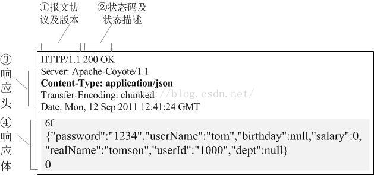

0x00 前言
在平时使用框架的时候我发现我们可以随意的设置 HTTP 头，而不用担心之前的程序是否输出过内容。但在 PHP 官网手册中设置 HTTP 头函数 header 和设置 Cookie 函数 setcookie 却有着如下警告：
请注意 header() 必须在任何实际输出之前调用，不管是普通的 HTML 标签，还是文件或 PHP 输出的空行，空格。
setcookie() 定义了 Cookie，会和剩下的 HTTP 头一起发送给客户端。 和其他 HTTP 头一样，必须在脚本产生任意输出之前发送 Cookie（由于协议的限制）。 请在产生任何输出之前（包括 和 或者空格）调用本函数。
0x01 为什么输出内容后就不可以修改 HTTP 头？
原因其实很简单，因为 HTTP 响应报文结构如下：

我们可以看见响应头是在响应体前面的，而 PHP 的任何输出都将属于响应体。也就是说一旦 PHP 输出内容，HTTP 响应头便已经发送给客户端了。此时木已成舟就算再用 header 函数设置头已经没有用了，因为 HTTP 头都发给客户端了/(ㄒoㄒ)/~~。
0x02 框架是怎么解决这个问题的？
很多用上框架的同学就几乎不会遇到这种情况，想设置 HTTP 头的时候就直接调用内置函数或框架的方法设置就 OK 了，从来都不用管之前有没有输出过内容。我们能够这样做依靠的就是：输出缓冲区。输出缓冲区的作用是将 PHP 的输出内容缓存在一块内存中，当缓冲区的内存满了或者程序执行完毕后便会将缓冲区的内容发送给客户端。这样做的主要原因是在 Web 场景里通过 Socket 一个个字节的发送数据比一块块的发送数据效率要低，所以采用输出缓冲区，便能将数据一块块的发送提高性能。当然这不是解决这个问题最关键的部分，最关键部分的是 PHP 提供了一系列的输出控制函数让我们能够控制输出缓存区！点此查看<输出控制函数>官网手册
解决此问题的重要函数 ob_start，作用如下：
此函数将打开输出缓冲。当输出缓冲激活后，脚本将不会输出内容（http 头除外），需要输出的内容被存储在内部缓冲区中。
注意： ob_start 的 chunk_size 参数，默认为 0，即缓冲区不限制大小，便不会因为输出内容长度过长而刷送
我们使用的框架一般都会在用户代码执行前就调用了这个函数，因此之后的任何的输出语句都不会真正输出给客户端而是保留在输出缓存区中，所以我们便可以随意的设置 HTTP 头，而不用担心之前是否已经有内容输出。
0x03 输出缓冲区的更多应用
调整内容的输出顺序
1 | try { |
这段代码是在 Slim 框架中复制来的，在 Slim 中有个配置项叫 outputBuffering，能够控制非 response 的输出内容在 response 之前、之后或不显示。实现这个功能主要利用的函数就是 ob_start 和 ob_get_clean，下面有个简易的示例：
1 |
|
忽略 include 的输出
有时候我们想通过 include 包含并执行一个脚本但却不希望输出脚本的内容，我们可以这样处理：
1 | ob_start(); |
0x04 总结
嗯哼，在享受框架的方便的同时最好还是想多一步思考背后的原因，能够带来更多的收获！另外文章中若出现错误，希望大家能够指出，若有疑问可以互相讨论:-D。